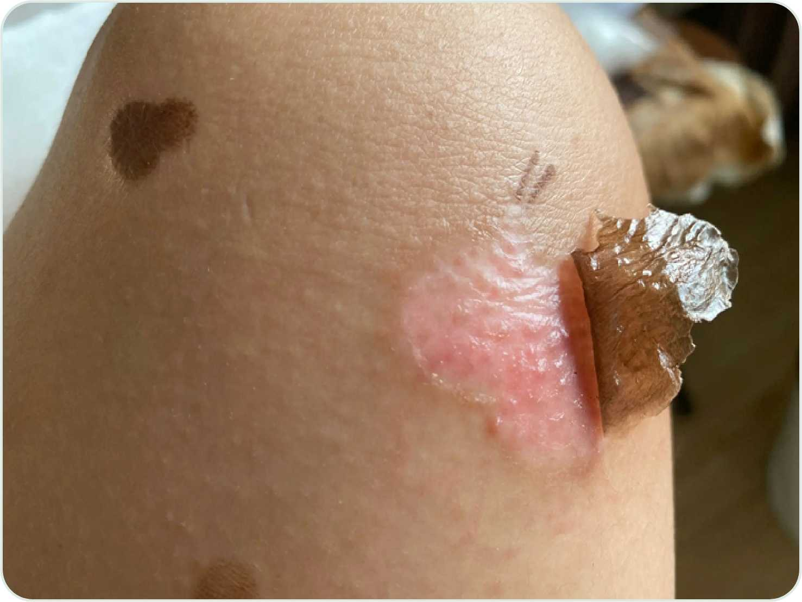
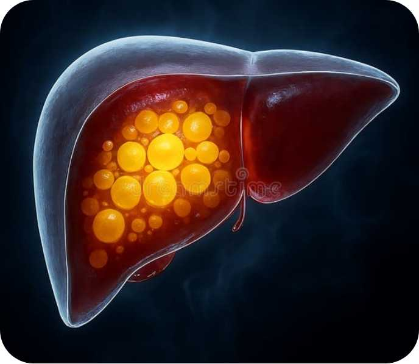
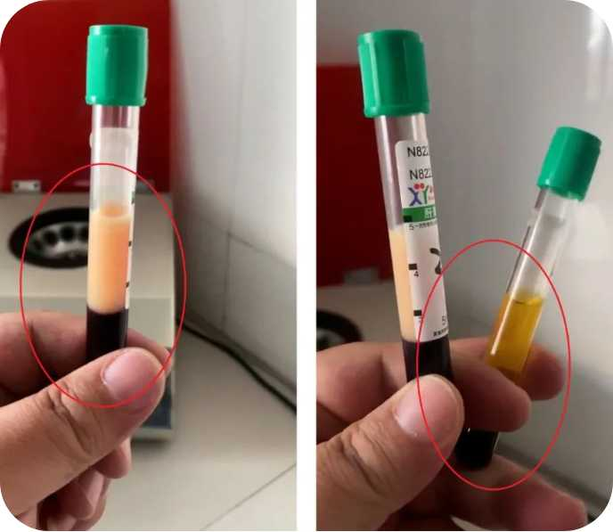
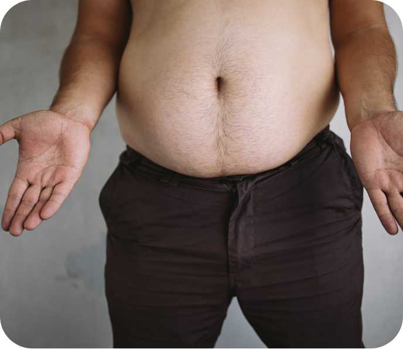

外用圣品，愈疡生肌 · 古法炮制的修护之力
甄选天然草本药材，经古法炮制萃取而成。针对皮肤疮疡、外伤愈合等问题，具有清热解毒、消肿止痛之效，温和修护，是居家常备的外用良方。
内调良方，平衡五脏 · 顺应四时的养生之道
融合枸杞、山药等药食同源食材，遵循中医五行相生之理。专为现代都市人群调理肝肾亏虚，改善代谢机能，缓解疲劳，重拾身体平衡与内在元气。
产品定位：一款集消炎、消肿、止痛、生肌于一体的外用中药油剂，传承中医外治精髓。针对各类皮肤创伤、烧烫伤及疮疡，以整体观念为指导，实现“标本兼治”，不仅快速缓解症状，更能促进创面修复，减少瘢痕形成。
以下体表问题人群可参考使用：烧伤、烫伤、外伤流血、带状疱疹、糖尿病足、外表溃疡、化脓创面

">天然草本萃取 · 温和修护创面
产品定位：专为现代都市人群设计的养生汤方，针对肝脏、肾脏及代谢功能失调，从根源出发提供整体调理方案，兼顾养生需求与日常便捷饮用。
中医经典理论认为“肝藏血，肾藏精”，精血互生互化。养肝必先补肾，补肾亦可养肝，二者相辅相成，是调理脏腑平衡的核心根基。
现代都市常见的脂肪肝、肥胖、高血脂等问题，多源于“肝失疏泄，脾失健运”。痰湿内阻不仅影响体态，更是脏腑功能失调的外在表现。
核心治则：滋阴润燥 • 养肝解酒 • 祛湿化痰 • 补肾益精
通过多维调理，恢复肝、肾、脾三大脏腑的功能平衡，从内而外改善代谢与体质，回归身心舒泰的健康状态。

">疏肝理气、健脾祛湿，有效化解肝脏脂肪堆积，加速酒精代谢与毒素排出。深层修复受损肝细胞，恢复肝脏解毒功能，从根源改善肝部亚健康状态。

调节脂质代谢紊乱，降低甘油三酯与胆固醇水平，改善血液粘稠度。清除血管内多余油脂，缓解代谢综合征，预防心血管隐患，重塑血液健康环境。

调理脏腑功能，平衡气血与水湿代谢，告别单纯节食减重。通过内在调理提升基础代谢率，实现健康减脂，减少赘肉堆积，减重后不易反弹。